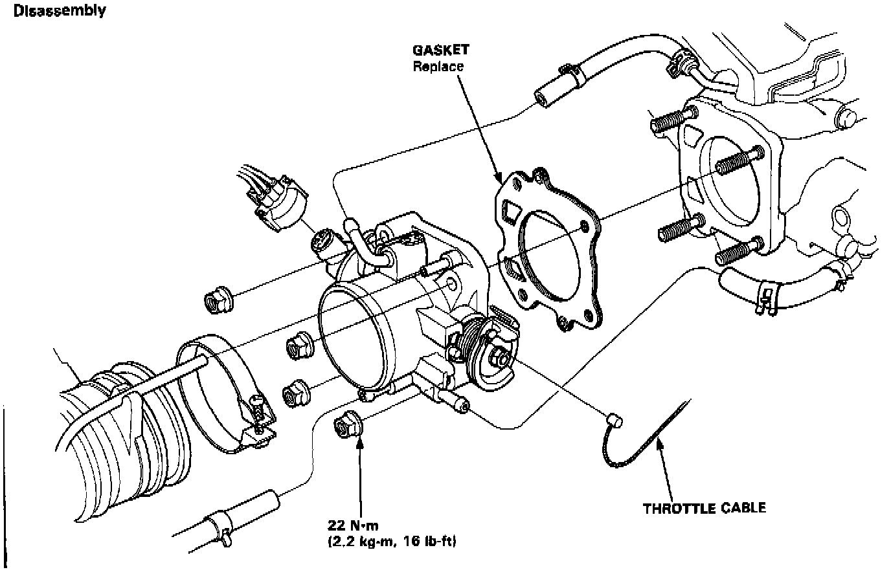

Operation CHARM
: Car repair manuals for everyone.
Home
>>
Acura
>>
1993
>>
Vigor L5-2451cc 2.5L SOHC G25A4 FI
>>
Repair and Diagnosis
>>
Powertrain Management
>>
Fuel Delivery and Air Induction
>>
Throttle Body
>>
Service and Repair
Throttle Body: Service and Repair
DISASSEMBLY

Follow diagram remove and install
throttle body
. After installation, adjust the throttle cable.
CAUTION:
The throttle stop screw in non-adjustable.